A group presentation
Addictions
→ next · ← back · F fullscreen · N notes · O index · Z zoom · L light/dark · M sound
What is addiction?
- A chronic condition: compulsive use despite harm
- Involves the brain's reward system (dopamine)
- Substance-related or behavioural
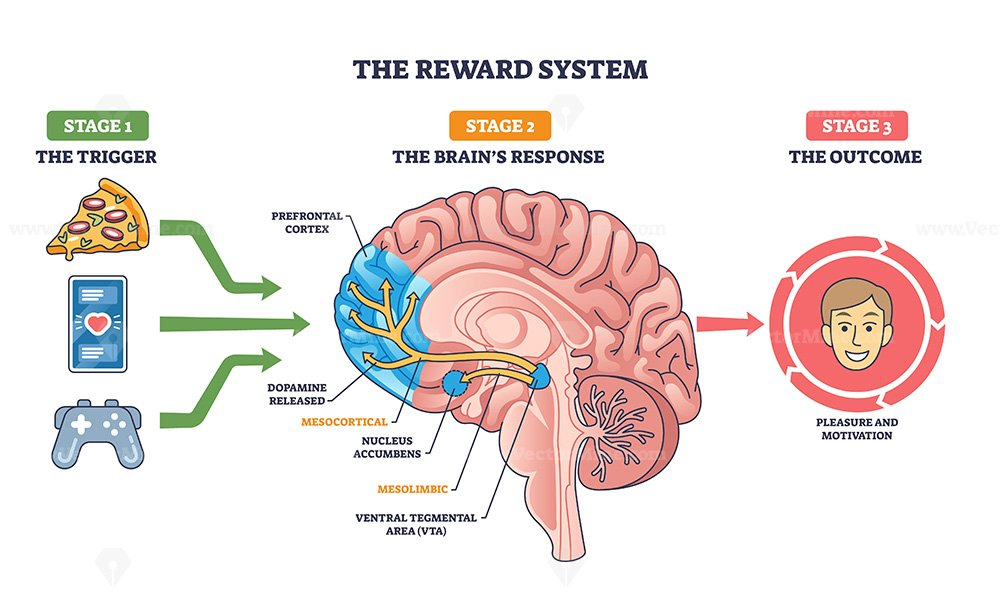
Alcohol
Cristian Tănase
Legal. Normal. Risky?
Which substance do you think is the most harmful to society overall?
What is alcohol?
- Ethanol, made by fermenting sugar
- A depressant: it slows the brain down
- One standard drink ≈ 10-14 g of pure alcohol
Brain and body
- Releases dopamine: the "reward" feeling that makes the brain want more
- Boosts GABA (the brake) and lowers glutamate (the accelerator): slower, calmer, less control
- Tolerance: the brain adapts, so the same amount works less and you drink more
- Withdrawal: when alcohol stops, the brain is over-excited: tremors, anxiety, seizures
Key numbers
deaths a year from alcohol (4.7% of all deaths)
people living with alcohol dependence
deaths a year from all other drugs combined
What does 37 g of alcohol look like?
Legal does not mean safe
Alcohol scores highest overall, mostly because of the harm it does to other people (46 vs 21 for heroin)
What does the score mean?
Experts rated each drug from 0 to 100 on 16 criteria. 100 = the most harmful drug on that criterion, 0 = no harm.
Some harms matter more than others (death counts more than most). The group set a weight for every criterion.
Weighted scores sum to a total out of 100: a drug scoring worst on every single criterion would get 100.
Harm to the user · 46% of the total
- Death (from the drug itself, or related)
- Damage to health (specific or related)
- Dependence
- Impairment of mental functioning
- Loss of tangibles (job, income, home)
- Loss of relationships
Harm to others · 54% of the total
- Injury
- Crime
- Family adversities
- Economic cost
- Community
- Environmental and international damage
Effects: health and mind
Body
Mind
Effects: family, work, society
Family
Conflict, domestic violence, neglect
School and work
Absences, lost jobs, lost trust
Roads and crime
alcohol-related injury deaths every year
Cost
Billions in healthcare and lost work
The other side: moderation
- Social glue: toasts, celebrations, shared rituals
- Lower inhibitions: easier to talk and relax
- Most drinkers never become dependent
- But the benefits shrink fast as amounts grow
Is there a safe amount?
Do you think there is a quantity of alcohol that is completely risk-free, or even good for you, like the famous glass of red wine?
Case study: Cari Lightner
Fewer than half, even with more people and more cars
Remember + where to get help
Remember
Need help?
Nicotine
Teodor Moroșan
How common is tobacco?
What share of Romanian adults do you think use tobacco?
Introduction
- Naturally occurring chemical found in tobacco plants
- Highly addictive stimulant
- About 1.2 billion tobacco users worldwide (2024)
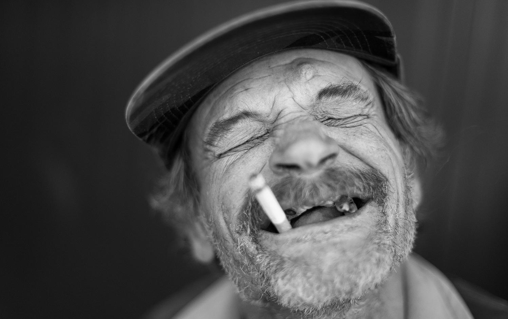
Effects of nicotine
Positive (short term)
Negative
Methods of consumption
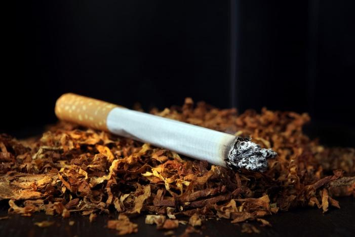
Combustible tobacco
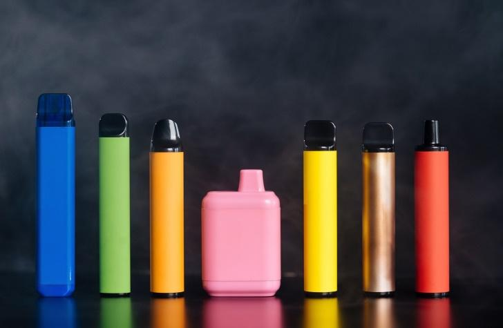
Vapes and e-cigarettes
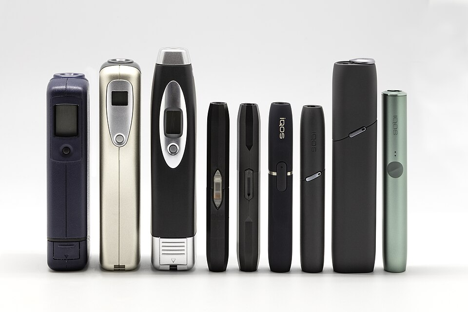
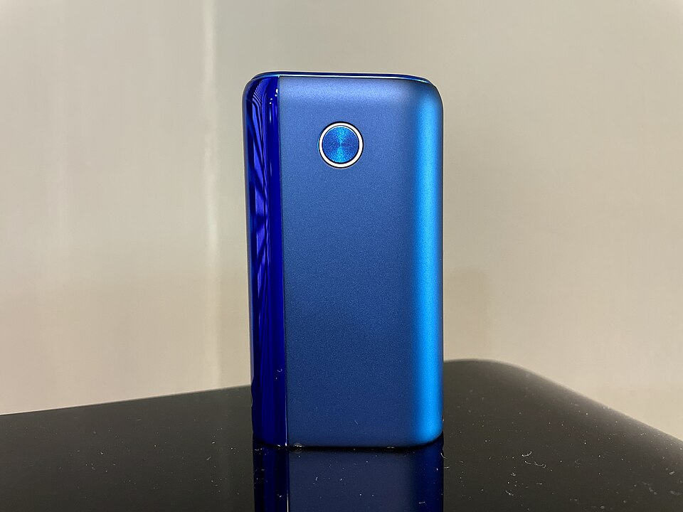
Heated tobacco
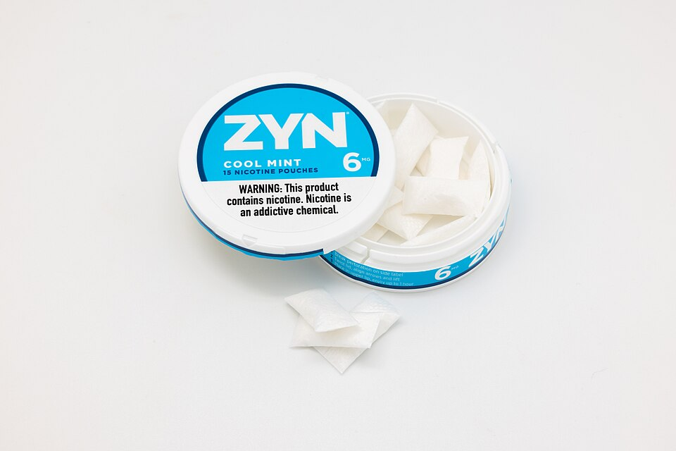
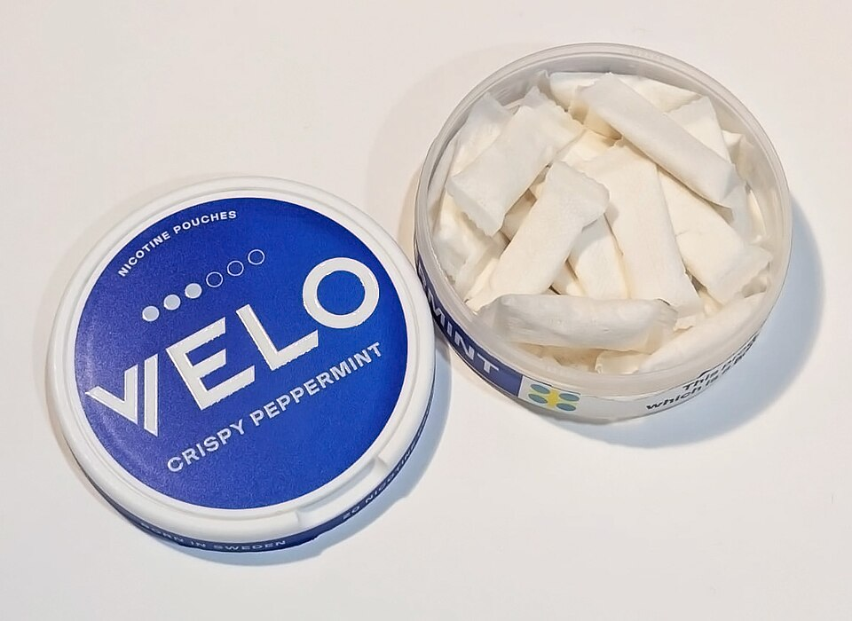
Nicotine pouches: ZYN, Cuba, Velo
How addiction works
- Nicotine activates nicotinic receptors and releases dopamine
- The brain associates nicotine with reward
- Tolerance, cravings, withdrawal
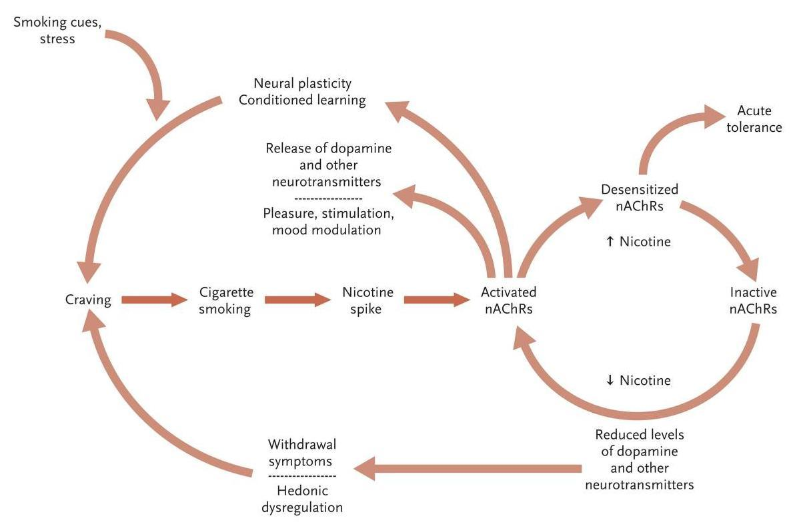
Quitting
Withdrawal symptoms
Ways to quit
Nicotine replacement therapy
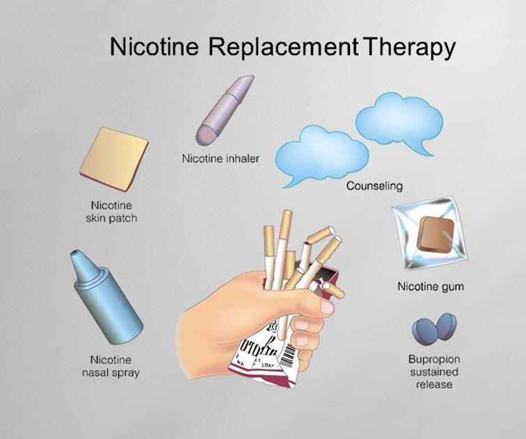
NRT options
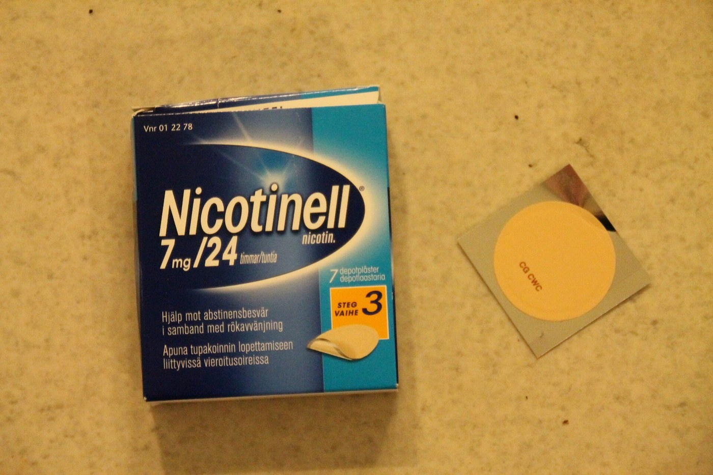
Nicotine patch
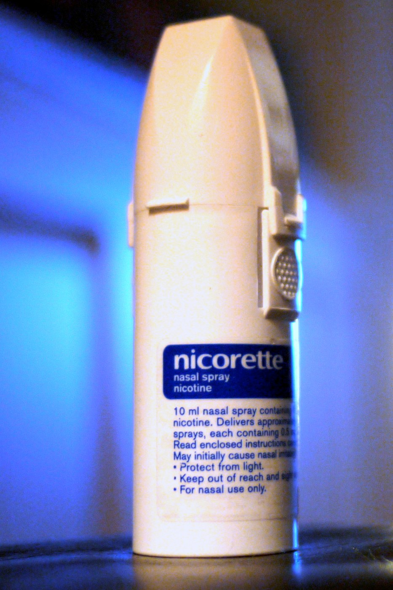
Nicotine nasal spray
Social Media & Video Games
Alexandru Lungu
Your phone and you
How many times a day do you think the average person touches, taps or swipes their phone?
Slot machines in our pockets
- 2,600+ touches, taps and swipes on our phones every day
- Apps copy casino rewards: pull-to-refresh hooks us
- You are not the customer: your attention is the product
Video: how apps are designed to hook us (1 min)
Open on YouTube at 1:05-2:05 ↗
What is it?
- Not just a bad habit: a behaviour your brain craves
- Social media hooks us with belonging and fear of missing out
- Games hook us with level-ups, rare loot and bonus XP
Brain and body
- Dopamine loop: unpredictable rewards make the brain seek the same action
- Intermittent reinforcement: we never know what comes next, so we keep scrolling
- Tolerance and withdrawal: more screen time needed; offline means anxiety
A year of scrolling
The average user spends 2.5 hours a day on social platforms. How many full 24-hour days is that in one year?
Key statistics
- WHO lists "Gaming Disorder" in ICD-11, next to gambling
- 3+ hours a day on social media: double the risk of depression and anxiety (JAMA Psychiatry)
- 2.5 hours a day on social platforms = nearly 38 full days a year
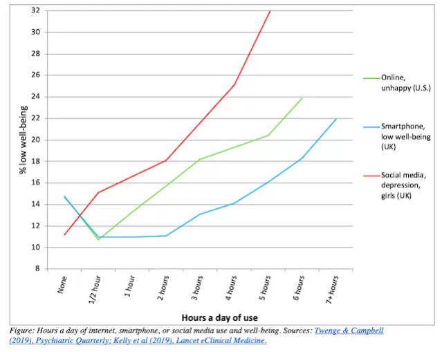
Effects: health and mind
The psychological toll
Comparing our lives to filtered highlights: body image issues and isolation
Cognitive fragmentation
Short videos destroy attention spans: deep focus gets nearly impossible
The physical toll
Blue light blocks melatonin: insomnia. Sedentary life: "tech neck"
Effects: relationships and society
- "Phubbing" (phone snubbing) erodes real-world intimacy and empathy
- Digital procrastination drains school and work performance
- Algorithms push outrage: polarisation and echo chambers
Case study: the TikTok algorithm
- Not a chronological feed: AI builds a hyper-personal profile of every user
- It even reads hardware data like battery level and storage
- Goal: predict how long you will keep watching
- Question: could you notice it happening to you?
Video: how the TikTok algorithm works (about 1.5 min)
Open on YouTube at 0:55-2:20 ↗
Prevention and treatment
Digital hygiene
Add friction: mute notifications, grayscale mode, no phones in the bedroom
Fill the void
Replace cheap dopamine with sport, art, reading
Professional help
Cognitive Behavioral Therapy (CBT) for severe dependency
Key takeaways
- Technology is a neutral amplifier: use it with intention, not passively
- Be the user, not the product
- Protect your reality: real relationships and health cannot be rebooted
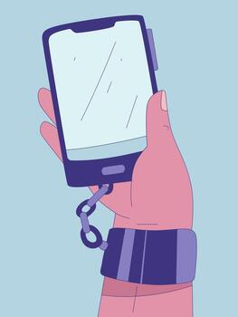
Drugs
Andrei Mihai Ciobanu
Up or down?
Over the last 10 years, do you think the number of people who use drugs went up, went down, or stayed the same?
How many people use drugs?
- 331 million people used drugs in 2024
- That is 1 in 16 people aged 15-64
- Up 34% in ten years: about 10 points of it is population growth
What counts as a drug?
A drug is any substance that changes how you feel, think or behave. Four main groups:
Cannabis
Marijuana, hashish. Relaxes and changes perception.
Opioids
Heroin, fentanyl, strong painkillers. Pain relief and euphoria.
Stimulants
Cocaine, amphetamines, ecstasy. Energy and a racing heart.
Hallucinogens
LSD, magic mushrooms. Change how the senses work.
How drugs hijack the brain
- All drugs act on the reward pathway: from the VTA (where dopamine starts) to the nucleus accumbens (pleasure) and prefrontal cortex (control)
- They flood it with dopamine: 2-10x more than natural rewards (NIDA, the US National Institute on Drug Abuse)
- The brain adapts: tolerance, then withdrawal
- Result: cravings and loss of control
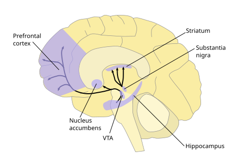
Cannabis and opioids
Cannabis
Opioids
Stimulants and hallucinogens
Stimulants
Hallucinogens
Treatment gap
What percentage of people with a drug use disorder do you think receive any treatment?
Drugs around the world
256 million users: more than the other four drugs combined (141 million). Most use is occasional.
The cost: body, mind, society
Body
Mind
Society
Case study: the fentanyl crisis
- Fentanyl: a synthetic opioid about 50 times stronger than heroin
- Often hidden in fake pills, so people take it without knowing
- As little as 2 mg can be a lethal dose
Video: fentanyl on the streets of Seattle (about 70 s)
Open on YouTube at 0:39-1:51 ↗
The numbers: US overdose deaths
Why do you think deaths fell by about a quarter in one year?
Likely answer: naloxone and treatment reached more people, and the drug supply changed. Experts still debate it.
Treatment and prevention
Prevent
- Honest education
- Family and school support
- Early help for stress
Spot it
- Cravings, secrecy, lost interest
- Talk without judging
Treat
- Detox with doctors
- Therapy
- Naloxone reverses an opioid overdose
Recover
- Support groups
- Relapse is not failure
Takeaways and my view
- Addiction is a health condition, not a weakness
- Drugs hijack the brain's reward system
- Treatment works, but few people get it
- My view: treat addiction as a health problem, not only a crime
Kahoot time!
Let’s see what you remember
Join at kahoot.it · PIN: 515 4703
Thank you!
Questions?
References
Alcohol
- WHO, Global status report on alcohol and health, 2024
- Nutt, King & Phillips, The Lancet 376, 2010
- History.com; Encyclopedia.com (Cari Lightner, MADD)
- NHTSA, alcohol-impaired driving fatalities
Nicotine
- WHO, tobacco trends and use data, 2024 (to confirm)
- Photos (Wikimedia Commons): Styroks (CC BY-SA 4.0), easylocum (public domain); IQOS lineup and ZYN pouches (Aphis Marta, CC BY-SA 4.0); glo HYPER+ (Lorenza10, CC BY-SA 4.0); Velo can (Pixie Tricks, CC0)
Social media & games
- WHO, ICD-11 (gaming disorder)
- JAMA Psychiatry (social media and depression)
- Twenge & Campbell (2019); Kelly et al. (2019), chart
- YouTube: 0tVw2xArV0k, nfczi2cI6Cs
Drugs
- UNODC, World Drug Report 2026
- CDC NCHS, Data Brief No. 549, 2023-2024
- NIDA, dopamine pathways diagram (public domain, Wikimedia Commons)
- YouTube: Xmu-hIgFmIA (fentanyl, Seattle)